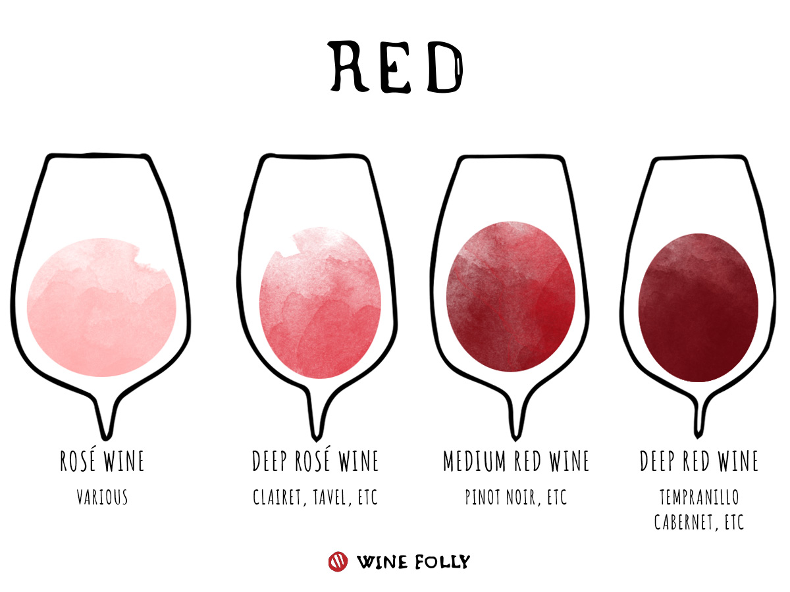

Follow these four steps to identify your wine varietal(s).
Look
Color of a wine tells you a lot about the varietal.

Smell
- Intensity: Position the glass just below your nose and take a quick, light whiff to judge the intensity. If the wine is highly aromatic, you will be able to smell it quite distinctly. Now position the glass where it's most optimal for you to smell individual aromas (usually by pulling it back a bit).
- Fruit: If you're having trouble identifying aromas besides a strong "vinous" note, try holding the glass farther away from your nose. Identify the type of fruit and also the condition of the fruit. For example, if you detect strawberry, ask yourself: is it fresh, ripe, or dried? A good goal to set is to attempt to identify 3 fruit aromas before moving on to other smells.
Fruits
- Herb/Other: Note all the other aromas you smell in a wine that are not related to fruit. You'll notice that some wines are distinctly more savory and have notes of herbs, flowers, and even minerals. By the way, no answer is wrong, notes in this category can include things like black pepper, espresso, balsamic, petroleum, and beeswax.
- Oak: If the wine has aromas of vanilla, coconut, allspice, chocolate, cola, and cedar or cigar, it's likely to have been aged in oak barrels. Aging wine in oak causes some flavor compounds from the barrel to transfer into the wine. Different species of oak trees affect flavors differently. For example, American oak (Quercus alba) tends to add more dill and coconut aromas whereas, European oak (Quercus petrea) tends to contribute aromas of vanilla, nutmeg, and allspice.
- Earth: When you taste earthiness in a wine, note whether it tastes organic (loam, forest soil, mushroom) or inorganic (slate, chalk, rocks, dried clay). These aromas, while still unexplained scientifically, offer more clues to where the grapes were grown. For example, wines from Burgundy and Champagne often have subtle, organic, mushroom aromas. A lack of earthy aromas also helps to identify (or narrow down) a wine's potential origin.
Taste
- Sweetness
- Tannin
- Acidity
- Alcohol
- Body
Conclusion
For more information, Wine Folly is a great resource!
Jump to Top